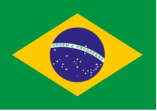

Las palabras de Simone
Prezada equipe CQ MedTech LATAM,
Al concluir otro trimestre en 2024, me gustaría tomarme un momento para reconocer el gran
trabajo y dedicación que cada uno de ustedes demostró a lo largo del año. Su compromiso ha
sido fundamental en el avance de nuestras iniciativas, desde el proyecto Simplicity hasta la
integración de extremo a extremo y la mejora de la experiencia del cliente, ofrecemos
resultados excepcionales.
Nuestro viaje de transformación en la gestión de la calidad, caracterizado por la
integración de la Inteligencia Artificial, el Aprendizaje Automático y la Automatización a
través de proyectos globales como Quin, es nuestra búsqueda incansable de la excelencia.
Además, nuestra iniciativa i-Prevent ejemplifica nuestro enfoque en la calidad proactiva y
la prevención, fortaleciendo nuestra cultura de calidad con un énfasis en CDs y LOCs.
En el mes de octubre celebramos el Mes de la Calidad con una notable participación en actividades virtuales y presenciales, demostrando el compromiso y el entusiasmo de nuestro equipo. También quiero resaltar la importancia de nuestros resultados en el CREDO, que demuestran tasa de participacion del 96%. Resaltando nuestra alineación con los valores fundamentales de la compañía, que sirven como base sólida de nuestro éxito.
Les animo a todos a que vuelvan a escribir sobre estos logros mientras continuamos nuestro viaje juntos. Gracias por su arduo trabajo y compromiso con la calidad.
OUR CREDO FOCUS
2024 – Nuestro Credo / CQ LATAM Results
Estimado equipo CQ LATAM:
Desde el equipo de liderazgo, queremos expresar nuestro agradecimiento por su compromiso y grandiosa participación en la encuesta de Credo realizada el pasado mes de septiembre. Los resultados nos brindan la oportunidad de evaluar en qué áreas nos estamos fortaleciendo y en cuáles debemos prestar mayor atención para mejorar tanto como equipo, como compañía.
Como líder de Credo, me llena de orgullo compartir los excelentes resultados de este año: logramos una participación del 96% y un puntaje general del 87%. Es importante destacar que, al comparar los resultados de 2023 con los de 2024, hemos crecido tres puntos en Inclusión, nos mantenemos estables en Desarrollo de Talento y cuatro puntos en Salud y Bienestar. Si bien somos conscientes de que existen áreas de oportunidad para mejorar, estamos comprometidos en desarrollar planes de acción que fomenten una mejora continua y que el trabajo en equipo de CQ LATAM sea el motor para alcanzar nuevas metas.
Finalmente, queremos destacar el compromiso de cada uno de ustedes para convertir a J&J en una mejor compañía, tanto para los pacientes como para todos quienes formamos parte de ella.
Our Credo Survey CQ LATAM Results
arrow_upward
QUALITY MONTH 2024 RECAP



Alcanzamos una conexión máxima de 193 personas en una sesión y tuvimos un promedio de 80 personas conectadas durante todas nuestras sesiones. Hemos estado conectados y enfocados en la calidad durante más de 900 minutos, discutiendo cómo generamos valor e impulsamos Johnson & Johnson para el futuro. ¡Muchas gracias por formar parte del mes de la calidad 2024! Recuerde, la calidad es un esfuerzo continuo durante todo el año, y juntos, ¡hacemos que suceda!
KEY PROJECTS
Nuevo Portal CQ MedTech LATAM
¡Estamos entusiasmados con nuestro nuevo portal CQ MedTech LATAM! El lanzamiento se realizó durante la reunión de apertura del Mes de Calidad 2024 y es un nuevo canal de comunicación de la organización CQ MT LATAM para todos los empleados de MedTech LATAM. ¡Manténgase atento y conozca haciendo clic en el enlace de abajo!
CQ ENABLING
Facilitar el crecimiento empresarial
Módulo EtQ Compliance Obligation para Internal Standard Management
El 28 de octubre de 2024, tuvimos la implementación del nuevo Módulo de Compliance Obligation en ETQ para Implementación de Estándares Internos en MedTech LATAM Locs.
Compliance Obligation es un módulo de ETQ dedicado a la evaluación e implementación de normas. Le permite realizar evaluaciones y seguir acciones para implementar estándares J&J nuevos o revisados.
Este módulo será utilizado por las franquicias y Commercial Quality para la evaluación de los estándares J&J (J&J QPS). Vale la pena señalar que este módulo ya se utiliza en varias unidades de negocio de MedTech para otros fines.

La implementación del módulo de Compliance Obligation en ETQ es parte de la transición al proceso E2E en las actividades de GxP de los Locs/DC, adoptando procedimientos compartidos para MedTech y permitiendo la digitalización de las actividades de gestión de estándares
Se programarán sesiones continuas de comunicación, capacitación y demostración para apoyar al equipo de CQ en el uso de esta nueva herramienta. ¡Manténgase atento!
GnO - Six Pack
Proyecto de mejora de LATAM para la introducción de nuevos productos (NPI) y la discontinuación de productos
Te invitamos a conocer los resultados y mejoras que se están desarrollando para NPI & PD LATAM, además del equipo que desarrolló esta iniciativa.Haga clica quí.


Este proyecto se implementó para optimizar el proceso de introducción de nuevos productos (NPI) y descontinuación de productos (PD) en todas las franquicias. Se han creado documentos que no son de GxP, que incluyen una guía para NPI con su Check list y una guía para PD con asignación. Estas características ayudan a identificar posibles interrupciones por los requisitos de calidad antes de su lanzamiento. Además, garantizan el cumplimiento del Sistema de Gestión de Calidad de CQ MedTech LATAM con los estándares globales y las necesidades regulatorias de J&J.
Projeto Supernova
Programa Amalgama - Inicio del Proyecto Supernova
En octubre de 2024, tuvimos el inicio del Proyecto Supernova con el Equipo de Liderazgo de CQ MT LATAM.
El Proyecto Supernova es una iniciativa regional para:
- Aclarar el proceso de flujo de trabajo y las responsabilidades de los super users de CQ locales y regionales.
- Aclarar el proceso de cualificación para super users de CQ para cada herramienta de TI.
- Gobernanza de todos los super users de CQ para apoyar/aprobar mejoras de software y permitir la continuidad del negocio. El enfoque principal de este proyecto se centra en los siguientes módulos de propiedad de CQ : Windchill, ETQ (todos los módulos), ECM (CST), Summit LMS, SAP BTB (Características de Gestión de Calidad) y otras herramientas digitales globales (desarrolladas por usuarios).
Plazo de ejecución:
- Inicio: Septiembre de 2024
- Objetivo de finalización: Marzo de 2025
Escopo:
- Herramientas de TI en las que los empleados de CQ MT LATAM son mapeados como super users.
- Remplazar por Redes de Super Users SCSS.
Framework
arrow_upwardNuestro viaje del proyecto
arrow_upward
Estructura
arrow_upward
Customer Value & Support (CV&S)
arrow_upward


CUSTOMER EXPERIENCE

CX LATAM
El proyecto CX LATAM se desarrolló en 3 pilares principales:
- CX Academy;
- Explorar;
- Proyectos locales;
Te invitamos a conocer los principales logros de cada pilar y sus aportes e impactos según cada público objetivo.

CX Academy
10
Publicaciones sobre Viva1873
Vistas de publicaciones163
Reacciones73
ComentariosLogros
Impulsar nuestra cultura CX a través de pequeñas lecciones con los puntos clave para reconocer las contribuciones de nuestro equipo de CQ y los mecanismos adecuados para mejorar la experiencia de nuestros clientes.

Hemos tenido un gran impacto global a través de publicaciones frecuentes con mensajes poderosos.
Posicionar la región como referencia en el cultivo CX.
Participación activa en conexión en espacios como One CQ LATAM Touch y Quality Month.
Explorer (haga click en los botones para ver las interacciones)
4 Interacciones con la herramienta Explorer con las diferentes Unidades de Negocio (Ethicon, CSS y DPS) y Medical Affairs del Cluster Sur.


Foro con BWI.

5 Explorer Foros con el equipo comercial durante el año.


4 Explorer Foros con nuevos distribuidores de Mentor y Semana de Buenas Prácticas Empresariales con Canal Indirecto.


Local Project (haga click en los botones para ver las interacciones)
Entrenamiento con canal indirecto y Central de
esterilización en Chile.
Video del proceso de reclamación de producto.

Formación y refuerzo con nuevos distribuidores de Mentor.
Semana de Buenas Prácticas Empresariales con Canal Indirecto.
CANIFARMA/COFEPRIS/Convención Nacional de Funcionarios Sanitarios

Customer Focus Operation
1er Encuentro de Calidad con Distribuidores de MedTech Brasil
El 2 de agosto de 2024, realizamos el 1er Encuentro Nacional de Calidad con Distribuidores en Johnson & Johnson Medtech en la Sala Brasil de JK, en Sao Paulo. El evento contó con la presencia de un equipo multidisciplinar: Commercial Quality, HCC, Brand Protection, Service Solution y Canal Indirecto y tuvo como objetivo fortalecer la colaboración con nuestros Distribuidores desde una agenda de cumplimiento.
Detalles de la reunión
arrow_upward
Simplicity
Simplicity LATAM Q3 Highlights: Impulsando la eficiencia y la innovación con nuevas soluciones digitales
¡En el tercer trimestre, el programa Simplicity LATAM realmente destacó con emocionantes lanzamientos! Se lanzaron ocho (8) nuevas soluciones digitales dentro de CQ MedTech, desarrolladas no solo a nivel local (Colombia y México), sino también a nivel regional, lo que resultó en un impresionante ahorro anual de más de 500 horas! Estas automatizaciones están racionalizando nuestros procesos al eliminar tareas transaccionales y manuales, lo que aumenta significativamente la eficiencia y la productividad del equipo. ¡Felicitaciones a todos los equipos involucrados!
Soluciones digitales
Para obtener una vision general de cada solución digital , consulte las descripciones a continuación o póngase en contacto con el responsable de la solución digital.
Si tienes alguna idea de utilizar herramientas digitales que mejoren la agilidad y eficiencia de los procesos, no dudes en contactar con nuestro equipo Simplicity LATAM. ¡Continuemos avanzando en nuestro viaje digital transformador!
- Luiza Dias – Líder de Proyecto y SME de Brasil
- Matheus Costa - SME Regional
- Lorena Sanabria – SME do México
- Fernanda Hurtado – SME do Cluster Norte
- Veronica Ramirez - Clúster Sur SME
- Adhara Garcia – Sponsor
Intake Late Dashboard Regional – CoE Product Complaint
arrow_upward
Proyecto ANEMO Regional
arrow_upward

CQ MT LATAM Communication Request Regional
arrow_upwardSeguimiento de reclamaciones de proveedores en México
arrow_upward
Polo Digital Solution Colombia
arrow_upward


Stop Shipment & Field Action LATAM Report Regional
arrow_upward
Gestión de descargas de temperatura para TSP Shipping Colombia
arrow_upward
Manual para Evaluación de Defectos (PPV) Colombia
arrow_upward
News & Update
Atividades DE&I, Health and Wellbeing
México - Voluntariado con la Fundación APAC
El equipo realizó una actividad voluntaria con la Asociación Pro-People con Parálisis Cerebral (APAC), donde se realizaron donaciones, actividades de apoyo a la panadería, haciendo galletas y pudimos interactuar con los niños pintando con ellos! Fue una actividad muy enriquecedora y de sensibilización en todos los sentidos.


Carrera por la Salud Visual 2024 México
Con el objetivo de promover nuestra marca de J&J como empresa líder en salud visual, el equipo de Visión Quirúrgica en México se unió por primera vez como patrocinador de la 2ª Carrera por la Salud Visual, que tuvo lugar en el marco del Día Mundial de la Visión 2024, que ocurrió en el marco del Día Mundial de la Visión. celebrado el segundo jueves de octubre, y cuyo objetivo principal es llamar la atención sobre la importancia de la atención de la salud visual.

Sé tú mismo y cambia el mundo: Semana DE&I - J&J México.
Arraigados en nuestro credo, Johnson & Johnson, los valores de diversidad, equidad e inclusión (DE&I) impulsan nuestra búsqueda para crear un mundo más saludable y equitativo. En México, en 2024, esto nos incentivo a promover una cultura del trabajo donde se valora a todos y se escuchan las ideas.
Hacer de DE&I una forma de trabajar todos los días implica un esfuerzo colectivo de colaboración, motivación y pasión, donde cada perspectiva puede ser un facilitador de negocios en todo lo que hacemos.


Sé tú mismo y cambia el mundo: Semana DE&I - J&J México.
Durante la primera semana de octubre de 2024, pudimos, en Johnson & Johnson México, honrar nuestros valores de diversidad, equidad e inclusión, que han estado presentes en nuestra cultura durante más de un siglo. A través de esta iniciativa, pudimos ser testigos de los esfuerzos que estamos haciendo en la agenda de DE&I, aprendiendo y conociendo las historias de nuestros invitados especiales.
Como parte de la Semana DE&I de México, nuestro colega de CQ Alonso Martínez fue invitado a dar una conferencia para compartir su historia de vida y resiliencia con el personal de MedTech MX e Innovative Medicine.

Diálogos de inclusión en LATAM
EQUIPO REGIONAL
Durante el tercer trimestre, se llevaron a cabo reuniones dirigidas por líderes para discutir la inclusión con los equipos de LATAM. Echa un vistazo a algunas de estas sesiones con invitados especiales!
CLUSTER SUL
Diálogos de inclusión en LATAM

Mexico e Brasil
Reuniones dirigidas por gerentes y supervisores para hablar sobre la inclusión.


CLUSTER NORTE
Diálogo de inclusión; caso real de inclusión; y actividad de credo en la semana del credo.


ARGENTINA
Participación en el banco de alimentos, donde se pudo clasificar un total de 1.500 kg de alimentos, lo que permitirá completar más de 4.500 platos de comida.

CHILE
En la participación de la inauguración de Teleton 2024 , estamos participando en la actividad “Quién quiere ser solidario” para recaudar dinero y donarlo a la fundación de niños, niñas y adolescentes para la rehabilitación. Participación en la feria ERG DE&I.


Uncounsious bias dialog
Regional Latam
Durante nuestra reunión regional de septiembre, tuvimos una conversación abierta sobre el sesgo inconsciente, trayendo conceptos clave, tipos de sesgo que cualquiera puede tener y en qué situaciones necesitamos estar atentos para evitar tomar decisiones basadas en nuestros propios sesgos.
Saiba mais
arrow_upward

Actualizaciones de auditorías de JJRC
Brasil
Recibimos el resultado del último seguimiento realizado en Stock Point en Porto Alegre, con la mejor calificación posible: Verde/verde!
RECUERDE...